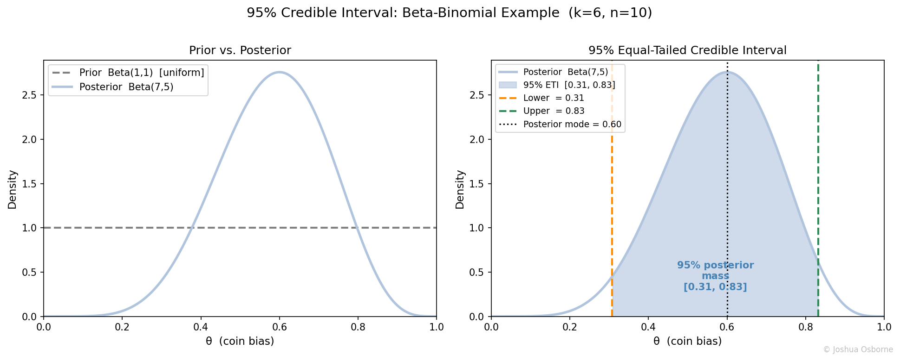

Statistics Notes
The Bayesian counterpart to the confidence interval: a direct probability of a parameter being within a range.
Contents
A credible interval is a range that contains the true parameter value with a specified posterior probability, given the observed data and a prior belief about the parameter.
A confidence interval makes a statement about a repeated-sampling procedure: “95% of intervals constructed this way contain \(\theta\).” Most people, including myself, prefer a direct probability statement: “given the data I observed, what is the probability \(\theta\) lies in this range?” A credible interval answers that question.
A credible interval is a range \([a, b]\) that, after updating your beliefs with the observed data, the probability that the true parameter \(\theta\) falls inside \([a, b]\) equals the chosen credibility level (e.g., 95%).
This is a direct probability statement about the parameter: you can literally say “there is a 95% probability \(\theta\) is in \([a, b]\).” A confidence interval cannot make that statement.
Two versions of the credible interval exist. The equal-tailed interval (ETI) cuts off equal probability in each tail, so 2.5% is left below \(a\) and 2.5% above \(b\) for a 95% interval. The highest density interval (HDI) is the shortest possible interval that still contains 95% of the posterior mass. For symmetric posteriors they are the same; for skewed posteriors the HDI is narrower and preferred.
| Symbol | Type | Meaning |
|---|---|---|
| \(\theta\) | random variable | Unknown parameter, treated probabilistically |
| \(\mathbf{X}\) | vector | Observed data |
| \(P(\theta \mid \mathbf{X})\) | distribution | Posterior distribution of \(\theta\) given the data |
| \(P(\mathbf{X} \mid \theta)\) | function | Likelihood of the data given \(\theta\) |
| \(P(\theta)\) | distribution | Prior distribution over \(\theta\) |
| \(Q_p\) | scalar | \(p\)-th quantile of the posterior |
| \(\alpha\) | scalar \(\in (0,1)\) | Complement of the credibility level; \(1 - \alpha\) is the posterior mass contained |
| \([a, b]\) | interval | Credible interval bounds |
| \(\alpha_0, \beta_0\) | scalars | Beta distribution shape parameters (prior) |
| \(k\) | integer | Number of successes observed |
| \(n\) | integer | Total trials observed |
Posterior via Bayes’ theorem:
\[P(\theta \mid \mathbf{X}) \propto P(\mathbf{X} \mid \theta) \cdot P(\theta)\]
Equal-tailed credible interval (ETI):
\[[Q_{\alpha/2},\; Q_{1-\alpha/2}]\]
where \(Q_p\) is the \(p\)-th quantile of the posterior.
Beta-Binomial conjugate posterior (Bernoulli likelihood with Beta prior):
\[\theta \sim \text{Beta}(\alpha_0, \beta_0) \quad \Rightarrow \quad \theta \mid k, n \sim \text{Beta}(\alpha_0 + k,\; \beta_0 + n - k)\]
\[ \quad E[\theta \mid k, n] = \frac{\alpha_0 + k}{\alpha_0 + \beta_0 + n}\]
As \(n\) grows, the data term \(k/n\) dominates and the prior washes out.
A coin is flipped 10 times and 6 heads are observed. Construct a 95% credible interval for the bias \(\theta\).
Prior: \(\theta \sim \text{Beta}(1, 1)\) (uniform).
Posterior: \(\theta \mid \mathbf{X} \sim \text{Beta}(1 + 6,\; 1 + 4) = \text{Beta}(7, 5)\).
95% equal-tailed interval: \([Q_{0.025},\; Q_{0.975}] \approx [0.28,\;
0.85]\). The Beta distribution has no closed-form quantile
formula, so these values are computed numerically (e.g.,
scipy.stats.beta.ppf([0.025, 0.975], 7, 5)).
Interpretation: given the 10 flips and the uniform prior, there is a 95% probability the coin’s true bias lies between 0.28 and 0.85.
Compare to a frequentist 95% CI:
\[\hat{p} \pm 1.96\sqrt{\hat{p}(1-\hat{p})/n} = 0.6 \pm 0.30 \approx [0.30,\; 0.90]\]
The two intervals are similar here because the prior is uninformative and \(n\) is moderate. With a more informative prior or smaller \(n\), they diverge.
The posterior is a full probability distribution over \(\theta\).

With a strong (tight) prior, the credible interval can be narrow even with few data points, because prior knowledge is contributing information. As \(n\) grows, the likelihood dominates and the posterior estimates, shrinking the credible interval toward a point estimate regardless of the prior.
The HDI is the shortest interval achieving the target mass and always includes the posterior mode. For skewed posteriors, the HDI differs from the ETI and is generally preferred because it is more compact.
NOTE: The critical difference from a confidence interval is that, once you observe the data and compute the credible interval, the statement “there is a 95% probability \(\theta\) is in \([a, b]\)” is literally true within the Bayesian framework. A frequentist CI cannot make this statement.
“A credible interval and a confidence interval are the same thing.” They are numerically close for uninformative priors and large \(n\), but they answer different questions. The CI is a statement about a repeated-sampling procedure. The credible interval is a direct probability statement about \(\theta\) given the current data and prior.
“Using a prior makes the analysis subjective and unreliable.” The prior is a formal assumption, the same way the choice of likelihood function is an assumption. A weakly informative or uniform prior produces intervals close to frequentist CIs. Strong priors can be tested via prior predictive checks.
“A wider credible interval means a worse analysis.” Width reflects genuine posterior uncertainty. More data or a more informative prior produces a narrower interval.
confidence intervals, Bayes Rule, p-value, Thompson sampling